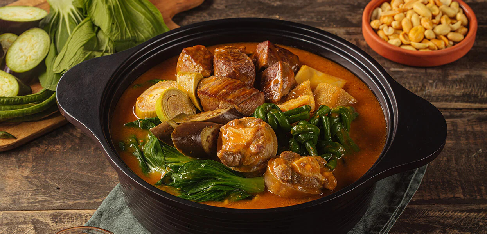

Oxtail Kare-Kare

What is Kare-Kare?
Kare Kare is a type of Filipino stew with a rich and thick peanut sauce. It is a popular dish in the Philippines served during special occasions.
The traditional recipe is composed of ox tail. There are instances wherein both ox tripe and tail are used. The vegetable components of the dish are string beans, eggplant, bok choy, and banana blossoms. Lightly browned toasted ground rice is used to thicken the sauce.
Ingredients
- 3 lbs oxtail (cut in 2 inch slices you an also use tripe or beef slices)
- 1 piece small banana flower bud (sliced)
- 1 bundle pechay or bok choy
- 1 bundle string beans (cut into 2 inch slices)
- 4 pieces eggplants (sliced)
- 1 cup ground peanuts
- 1/2 cup peanut butter
- 1/2 cup shrimp paste
- 34 Ounces water (about 1 Liter)
- 1/2 cup annatto seeds (soaked in a cup of water)
- 1/2 cup toasted ground rice
- 1 tbsp garlic (minced)
- 1 piece onion (chopped)
- salt and pepper